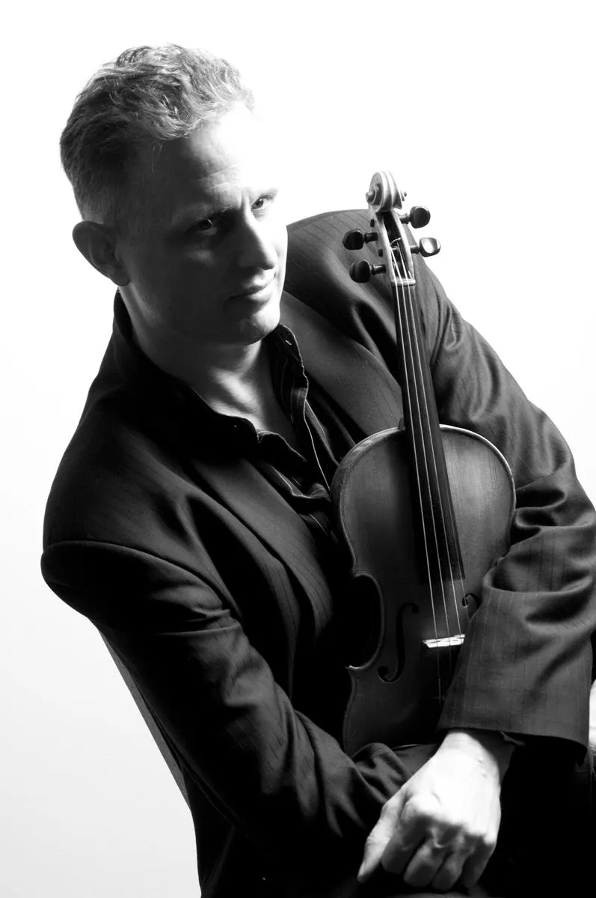

Symphony Violinist
Over 3500 concerts during my career
in the music business.
Studio Work
Recording and studio work with some of the biggest
names in the industry.
Teaching
Many years of private teaching, developing and
mentoring accomplished students.
Beyond Music
An avid interest in scuba diving, football,
board games, computer coding, and cooking!

Born in Canada, upon graduation from McGill University, I have had two major orchestra employments: 1st violinist with the Vancouver Symphony & Malaysian Philharmonic Orchestra, performing in over 3500 concerts, working with conductors such as Charles Dutoit, Lorin Maazel, Kazuyoshi Akiyama, Andrew Litton, and guest artists Rostropovich, Yo-Yo Ma, Pinchas Zukerman, Gil Shaham, Steven Isserlis, Isaac Stern, Nigel Kennedy, and others.
I have been acting as Concertmaster for the Selangor Symphony Orchestra since its inception in 2015.
I have had the privilege, over the years, of working with rock and pop artists including:
Canada: Nickelback, Chad Kroeger, Bryan Adams, Theory of a Deadman, Spirit of the West, Shania Twain, Our Lady Peace, Matthew Good Band, Jann Arden, Celine Dion.
USA / Europe: Smokey Robinson, Natalie Cole, YES, The Cranberries, The Moody Blues, America, Andrea Bocelli, Sarah Brightman.
Asia: Eason Chan, Siti Nurhaliza, Dayang Nurfaizah, Misha Omar, Aina Abdul, Anuar Zain, Ziana Zain, Hael Husaini, Ernie Zakri, Syamel, Taufik Batisah, Hafiz Suip.
Click on the YouTube links to view performances and recordings: